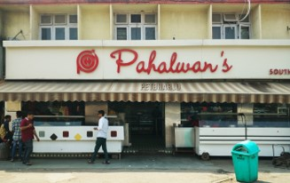

JAMMU AND KASHMIR
Jammu and Kashmir is a region administered by India as a union territory and consisting of the southern portion of the larger Kashmir region, which has been the subject of a dispute between India and Pakistan since 1947, and between India and China since 1962.

Best Places to visit:-
1. Hagon Valley:-

Hagon Valley also known as Betaab Valley is situated at a distance of 15 km from Pahalgam in Anantnag district in India's union territory of Jammu and Kashmir. The valley got its name from the Sunny Deol-Amrita Singh hit debut film Betaab
2. Apharwat Peak:-
Apharwat Peak is a summit, situated at a height of 4,390 metres above the sea level, in Gulmarg. It receives heavy snowfall and remains covered with snow for much of the year. The Line of Control is barely a few kilometres away from here.

3. Drung Tangmarg:-

Drang is another recently discovered tourist station in the beautiful Vale of Kashmir. It is located about 38 km north of Srinagar on Gulmarg road, just 3 km away from Tangmarg. The place is quite similar to Pahalgam with a fast water stream, known as Ferozpur-Nalla, flowing down.
4. Zoji La Pass:-
Zoji La is a high mountain pass in the Himalayas in the Indian union territory of Ladakh. Located in the Dras, the pass connects the Kashmir Valley to its west with the Dras and Suru valleys to its northeast and the Indus valley further east.

5. Frozen Lake:-

Alpather Lake in Gulmarg is a picturesque small lake which is also known as the Frozen Lake, which owes to its nature of being frozen from November until mid-June, it is a well-kept secret of Kashmir. This charming, high altitude lake is situated at the foot of the twin Apharwat Peaks at a height of 4,390 meters.
Must try Dishes:-
1. Dum Aloo:-

Dum Aloo or Aloor Dum is a potato based curry dish. "Dum" means slow-cooked, and "aloo" is potato. It is a part of the traditional Kashmiri Pandit cuisine, from the Kashmir Valley, in the Indian state of Jammu and Kashmir.
2. Kashmiri Pulao:-
Kashmiri Pulao, a rich Pulao recipe from the beautiful state of Kashmir (India). A flavorful rice preparation where, cooked rice is tossed with nuts/dry fruits and fresh fruits. The dish is also infused with saffron milk for the flavor and beautiful color. Kashmir in India is known for its natural beauty.

3. Nadu Yakhni:-

Nadu Yakhni is a very popular recipe from Kashmir. Its made from Lotus stems called nadru in Kashmir. It is a very traditional recipe of Kshmiri Pandit community. Nadru yakhni is a very simple curry made with flavourful spices/ garam masala and fresh yogurt.
Must visit Restaurants:-
1. Pahalwan’s Food Court:-

Pahalwan’s food court in Channi Himmat is one of the most popular restaurants in Jammu serving vegetarian delicacies prepared with love! If you are planning to visit Pahalwan then don’t forget to try Pav Bhaji and Puri Channa as these are the top choices by visitors.
2. Nathus Rasoi:-
Nathus Rasoi is one of the most pocket friendly vegetarian restaurants in Jammu and serves fresh-cooked North Indian cuisine. You must surely taste dal tadka with your favourite kind of bread. They are also known for offering delicious appetisers cooked in their unique way.
3. Falak:-
Falak, the beautiful revolving restaurant in Jammu is amongst the famous places to eat in Jammu and is known for their superb tandoori kebabs and international dishes. The restaurant offers 360-degree views of the lively Jammu city and their finely-crafted menu serves the best food in the area.